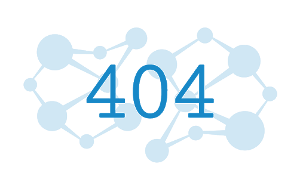

<ion-header class="ion-no-border">
  <ion-toolbar>
    <ion-buttons slot="start">
      <ion-back-button text="Search" defaultHref="/tabs/booking" color="primary"></ion-back-button>
    </ion-buttons>
    <ion-avatar slot="end">
      <ion-img src="../../../assets/img/profile.png"></ion-img>
    </ion-avatar>
  </ion-toolbar>
</ion-header>
<ion-content [fullscreen]="true">
  <div class="ion-padding">
    <ion-item lines="none">

      <ion-searchbar placeholder="Tunis,Sfax ....." ></ion-searchbar>
      <!--        <ion-col size="2">-->
      <!--          <ion-button color="light" fill="clear">-->
      <!--            <ion-icon slot="icon-only" name="options-outline"></ion-icon>-->
      <!--          </ion-button>-->
      <!--        </ion-col>-->
    </ion-item>

    <ion-row class="ion-align-items-center ion-padding-horizontal">
      <ion-col size="6">
        <h5 class="custom-font">{{trips.length}} Results</h5>
      </ion-col>
      <ion-col size="6" class="ion-text-right">
        <ion-button fill="outline" color="primary">
          <clr-icon size="24" shape="slider" dir="right"></clr-icon>
        </ion-button>
      </ion-col>
    </ion-row>

    <div class="ion-margin-top" *ngIf="trips.length===0">
      
      <p class="ion-text-center ion-padding-top">Pas de voyages entre ces 2 arrets</p>
    </div>

    <ion-card *ngFor="let trip of trips">
      <ion-card-content>
        <ion-row class="clr-timeline clr-timeline-vertical text-wrap">
          <ion-col size="6" class="clr-timeline-step">
            <div class="clr-timeline-step-header">{{getTimeFromString(trip.heure_dep)}}</div>
            <clr-icon size="24" shape="circle" class="is-success" aria-label="done"></clr-icon>
            <div class="clr-timeline-step-body">
              <span class="clr-timeline-step-title">{{trip.depStation}}</span>
              <span class="clr-timeline-step-description">{{trip.route_name}}</span>
            </div>
          </ion-col>
          <ion-col size="6" class="clr-timeline-step">
            <div class="clr-timeline-step-header ">{{getTimeFromString(trip.heure_arriv)}}</div>
            <clr-icon shape="dot-circle" aria-label="Current"></clr-icon>
            <div class="clr-timeline-step-body">
              <span class="clr-timeline-step-title">{{trip.arrStation}}</span>
<!--              <span class="clr-timeline-step-description">Garage</span>-->
            </div>
          </ion-col>
        </ion-row>
        <ion-row>
          <ion-col size="6" size-sm="8" class="ion-text-left">
             <ion-card-subtitle color="success">19.940 TND</ion-card-subtitle>
          </ion-col>
          <ion-col size="6" size-sm="4" class="ion-text-right">
            <ion-button mode="ios" fill="clear" color="primary"  (click)="goToDetails(trip)">
              Details
              <clr-icon size="36" shape="angle" dir="right"></clr-icon>
            </ion-button>
          </ion-col>
        </ion-row>
      </ion-card-content>
    </ion-card>
  </div>
</ion-content>
